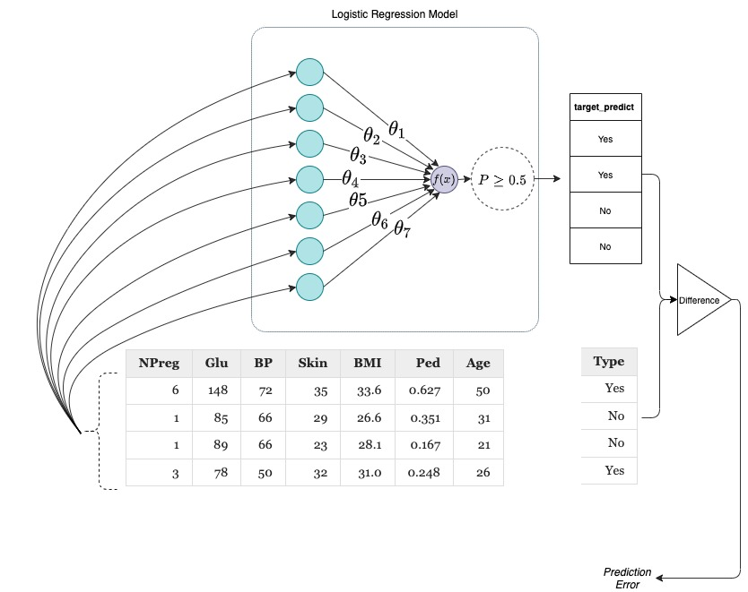

What is machine learning and what are the different types of learning algorithms.
What do you mean by a model in machine learning.
How to implement a simple model using ScikitLearn.jl
2.1 What is Machine Learning?
Machine Learning is a sub-field of statistics and optimization where your goal is to design, develop, and analyze algorithms that can learn patterns in the data. Algorithms can be thought of as procedures you need to follow to achieve a goal. Some examples of instances in your life where you use an algorithm include recipes for food, instructions for the direction to a place, strategies for solving a math problem, etc. (Computer algorithms are definitely different from the above examples, but I hope you got the general gist of what an algorithm means) Let’s take the example of food recipes to understand some concepts in machine learning further.
Everyone who has learned to cook by themselves knows that the meal isn’t guaranteed to taste that well the first time they try a new recipe. But with multiple attempts, you learn to adjust the spiciness, sourness, sweetness, gravy level, etc., to the right proportion that you will be successful in preparing an outstanding meal. If they were to record each of their attempts in a table, it would have looked something like this:
10 rows × 7 columns
Food ingredients and their proportions.
Chilly_Powder
Sugar
Salt
Pepper
Broth_Oz
Serves
Tastes
Float64
Int64
Float64
Int64
Float64
Int64
String
1
1.5
3
2.5
2
3.5
5
Non-Edible
2
2.0
1
3.0
4
9.5
4
Non-Edible
3
1.5
4
2.5
3
6.5
2
Best
4
1.5
4
2.5
0
5.0
5
Edible
5
1.5
5
1.5
4
8.5
3
Non-Edible
6
3.0
5
0.5
2
3.5
2
Non-Edible
7
1.0
4
0.0
3
9.0
4
Non-Edible
8
2.5
3
2.0
2
11.5
1
Non-Edible
9
3.0
0
2.0
0
11.0
2
Average
10
1.0
3
0.5
4
12.0
1
Edible
Note: Values in the above table were randomly generated.
In most cases, a table like the above one is called the data and each of your attempts (each row) is called an observation. With a data like this I can do 2 things:
Learn how values for each of Chilly_Powder, Sugar, Salt, Pepper, Broth_Oz and Serves influence the Tastes and use that information to come up with the best combination of values to ensure Best taste all the time. This is called inferential modeling.
Given a set of values for Chilly_Powder, Sugar, Salt, Pepper, Broth_Oz and Serves, I can predict if the meal is going to be Edible or not. This is called predictive modeling.
If we use the machine learning terminologies, the columns Chilly_Powder, Sugar, Salt, Pepper, Broth_Oz and Serves are called features and the column Tastes is called target. The degree of effect each variable has on the Tastes are called parameters.
The mathematical representation of the above information in a functional form is called a model. So, for the food recipe example, our model is:
Chances (Probability) of the meal being edible = \(f(\)\(\theta_1 \times\)Chilly_Powder + \(\theta_2 \times\)Sugar + \(\theta_3 \times\)Salt + \(\theta_4 \times\)Pepper + \(\theta_5 \times\)Broth_Oz + \(\theta_6 \times\)Serves\()\)
2.1.1 Supervised, Unsupervised, and Semi-supervised learning
The parameters, \(\theta_1, \theta_2, ....\theta_6\), represent the patterns in the given dataset and the goal of a Machine Learning algorithm is to find values for \(\theta_1, \theta_2, ....\theta_6\), so that I can reliably predict Tastes all the time. This type of machine learning problem, where I have information about the outcome of each attempt, is called supervised learning.
Suppose in our food recipe example, we didn’t have information about if the meal was edible or not; finding patterns in the data is still possible. The type of machine learning problem, where I don’t have information about the outcome of each attempt is called unsupervised learning.
Sometimes we use both supervised and unsupervised learning strategy to solve a problem and those types of machine learning problems are called semi-supervised learning.
Now let’s learn how to implement a simple model for a supervised learning problem similar to the one we discussed above.
2.2 Implementing a simple model
In this section we’ll learn how to implement a simple logistic regression model to predict if a woman is diabetic or not based on some of the medical information we have about that person. The dataset we are using in this section (refer Table 2.1) is structurally similar to the food recipe example we had in the last section. Before getting into the nitty gritty details of model implementation, let’s learn more about Logistic Regression.
2.2.1 Logistic Regression
In Section 2.1, we learned that a model is nothing but a mathematical representation of the relationship between the features (aka predictors) and the target. In the diabetes dataset, our target is the variable that predicts if a person is diabetic or not, and all other variables are considered features. We can represent this information in a general form as:
If we give a logistic parametric form to our function \(f(.)\), then it’s called the logistic regression model. A logistic function is defined as \[f(x) = \frac{1}{1 + e^{-x}} \tag{2}\]
Applying different parametric forms to equation (1) yields you different machine learning models. For e.g., if we had used an identity function i.e. \(f(x) = x\), the model we got is called the linear regression model (Note: Linear Regression models are not used for classification problems. The type of the problem you are trying to solve always restricts the type of models you can use.).
By using an activation function where the function will return Yes if the value we get using equation (3) is greater than or equal to 0.50 and return No otherwise, we can get prediction from our model that is comparable to the target in our data. The discrepancy between our model’s prediction and target is called the prediction error.
Once we have a model defined and the data available, the next step is to use an algorithm to learn optimal values for \(\theta\)’s so that I can predict values of the target consistently. The step where we use an algorithm to learn optimal values for \(\theta\)’s is called model training and the data we used for training is called the training dataset in machine learning.
2.2.2 How do Models learn?
Optimization algorithms are what make model training (learning) possible. In this section, let’s learn how they work from a birds-eye-view, as explaining the technicalities of how optimization algorithms work is beyond the scope of this textbook.

Schematic to understand the concept of model training.
An optimization algorithm learns pretty much the same way you learn things - through trail and error. With each trial, the goal of the optimization algorithm is to keep reducing the value of prediction error by manipulating the values for the model parameters (\(\theta\)s). After several trials, we get to a point where the prediction error is in an acceptable range and reducing prediction error further is impossible or futile. At that point, we save the values of \(\theta\) that helped us to reach that particular prediction error value. These saved values for \(\theta\) are called the coefficients of our learned model and corresponds to the patterns that were present in our data. Using the learned coefficients of our model, we will be able to make predictions on data the model has never seen. The data that the model hasn’t seen is called the test dataset and the prediction error we get on the test data is called the test error and the prediction error we were getting during training phase is called training error.
Now let’s learn how to implement a logistic regression model and train them on the data we have
Step 1: Project environment activation and Package Installation
Note: We expect that you have created a separate folder for storing all the julia scripts you’ll be developing as part of learning with this textbook. To open your project folder in VS Code, you can go to Menu –> File –> Open Folder. From the dialog box that pops up, you can choose the folder you created.
In order to make sure that you are always working in the correct project environment, have the following 2 lines of code towards beginning of every julia script you create:
In this section we will require 3 packages (To learn how to install a package, refer Section 1.2.2):
RDatasets: This package provides an easy access to a lot of toy datasets in machine learning.
ScikitLearn: One of the industry standard packages for doing machine learning projects. Provides utilities for model definition, training, testing, tuning, and much more.
DataFrames: A package for handling data in tabular form.
Step 2: Loading the packages
To load these packages, you can have the following line of code right below the code you wrote in step 1:
usingScikitLearn, RDatasets, DataFrames
If you got an error while running the above line of code, most of the time it means one of the three things:
You haven’t installed the package that you are trying to load.
You are in the wrong project environment. (This is why we highly recommend you to follow step 1 every time you create a new julia script.)
You have typed a wrong package name. The name of all packages in Julia are case sensitive.
Step 3: Loading the dataset
In this example, we will use the Diabetes in Pima Indian Women dataset (available via RDatasets). (Instruction on how to load a dataset that is available to you are a .CSV file is provided in the Appendix (?sec-appendix)). To load the dataset and show the first four observations, enter the following lines of code:
dataset is a function from RDatasets that provide a nice interface to load datasets in DataFrames format. The dataset function accepts two arguments: the data source, and the dataset name. In this case, the name of our dataset was Pima.te and the source was MASS package in R.
Trivia: If you see a word with () ending, then it is a function. A function is a collection of commands (several lines of codes) sharing a collective single objective. Anything that is passed inside () are called arguments. In our example, the objective of dataset function was to return the dataset (Pima.te) from the source (MASS) we mentioned.
diabetes is the name we gave to the variable that stores the data that was returned from the dataset function. The variable name is arbitrary and you can give whatever name you like. However, it is always recommended to give meaningful names.
Step 4: Making sense of the dataset
The diabetes dataset that we are using in this section was collected by the US National Institute of Diabetes, Digestive, and Kidney Diseases from a population of women who were 21 years and older and were of Pima Indian heritage living near Phoenix, Arizona. The dataset contains the following information:
NPreg: Number of pregnancies
Glu: Plasma glucose concentration in an oral glucose tolerance test
BP: Diastolic blood pressure (mm Hg)
Skin: Triceps skin fold thickness (mm)
BMI: Body Mass Index (\(\frac{\text{weight (Kg)}}{\text{height (m)}^2}\))
Ped: Diabetic pedigree function
Age: age in years
Type: Diabetic or not (according to WHO criteria)
Accessing elements in the data
Now let’s take a small detour and learn how to access different cells and slice the data.
To access the \(10^\text{th}\) row in the data:
diabetes[10,:]
DataFrameRow (8 columns)
NPreg
Glu
BP
Skin
BMI
Ped
Age
Type
Int32
Int32
Int32
Int32
Float64
Float64
Int32
Cat…
10
9
119
80
35
29.0
0.263
29
Yes
The first position in [] indicated the row, and the second position indicated column. If you want to choose all columns then you put : in the second position.
If you want to choose all rows, then you put ! in the first position instead of 5:9.
To select multiple columns:
diabetes[5:10,[:BMI,:Age]]
6 rows × 2 columns
Accessing multiple columns (for rows from 5:10)
BMI
Age
Float64
Int32
1
30.5
53
2
25.8
51
3
45.8
31
4
43.3
33
5
39.3
27
6
29.0
29
To select all columns except Type:
diabetes[5:10,Not(:Type)]
6 rows × 7 columns
All columns except Type (for rows from 5:10)
NPreg
Glu
BP
Skin
BMI
Ped
Age
Int32
Int32
Int32
Int32
Float64
Float64
Int32
1
2
197
70
45
30.5
0.158
53
2
5
166
72
19
25.8
0.587
51
3
0
118
84
47
45.8
0.551
31
4
1
103
30
38
43.3
0.183
33
5
3
126
88
41
39.3
0.704
27
6
9
119
80
35
29.0
0.263
29
Step 5: Choosing the features and the target
Our goal in this chapter is to define a supervised machine learning model that can predict if a woman is diabetic or not given their pregnancy history, glucose level, blood pressure, skin fold thickness, BMI, diabetic pedigree function, and their age.
If the value we have to predict is a category, that’s called a classification problem and if the value we had to predict was numeric, it’s called a regression problem. Both the examples (food recipe and diabetes) we discussed in this chapter are classification problems. In the food recipe example the categories of the target were: Non-Edible, Edible, Average, and Best. For the diabetes dataset, the categories of the target are Yes and No indicating if a woman is diabetic or not.
We can use the data slicing skills we learned in the previous section to extract the features and the target from the data:
features =Array(diabetes[!, Not(:Type)]);target =Array(diabetes[!, :Type]);
The first line selects all columns except the Type column and saves them as an Array in the variable features
The second line selects just the Type column and saves them as an Array in the variable target
Step 6: Creating a Model Instance
Logistic regression model is one of the most simple, common, and baseline model we use for classification problems. To create a logistic regression model instance, we can import the Logistic Regression function from linear_models in ScikitLearn package.
The line simplelogistic=LogisticRegression() creates an empty logistic regression model object which can store information about the model, data, learning algorithm, and learned parameters. The fields that are stored in a model object varies depending on the model you are defining.
the variable name simplelogistic is arbitrary and you can give whatever name you like.
If you are going to create another model instance (say a neural network model), don’t reuse the variable name. It’s better to choose a different variable name each time you are defining a new model.
Step 7: Training your model
In Section 2.2.2, you learned how an optimization algorithm helps the model to learn patterns in the data. The fit! function from ScikitLearn implements that procedure.
fit!(simplelogistic, features, target);
the fit! function takes three arguments: the model you want to train, the features, and the target.
Whenever you see an exclamation mark in functions, it means that the function is mutating (changing) the values of one or more arguments passed to that function. In this case fit! function is changing the values of \(\theta\), which is part of the model definition.
Now you have a logistic regression model (simplelogistic) that’s trained on Pima diabetes dataset. To see the learned values for \(\theta\), you can run the following line of code:
You can plug in these values into equation (3) to reliably compute the probability of a woman being diabetic.
Code Summary for Chapter 2
# Activating the local project environment usingPkgPkg.activate(".")# Loading the packages usingScikitLearn, RDatasets, DataFrames# Loading the datasetdiabetes =dataset("MASS", "Pima.te");first(diabetes,4)# Choosing the features and targetfeatures =Array(diabetes[!, Not(:Type)])target =Array(diabetes[!, :Type])# Creating a logistic regression model instance @sk_import linear_model: LogisticRegressionsimplelogistic =LogisticRegression()# Training the model fit!(simplelogistic, features, target)# Viewing the learned parameters simplelogistic.coef_
In the next chapter, we will learn how to check if our trained model is a good one or not.